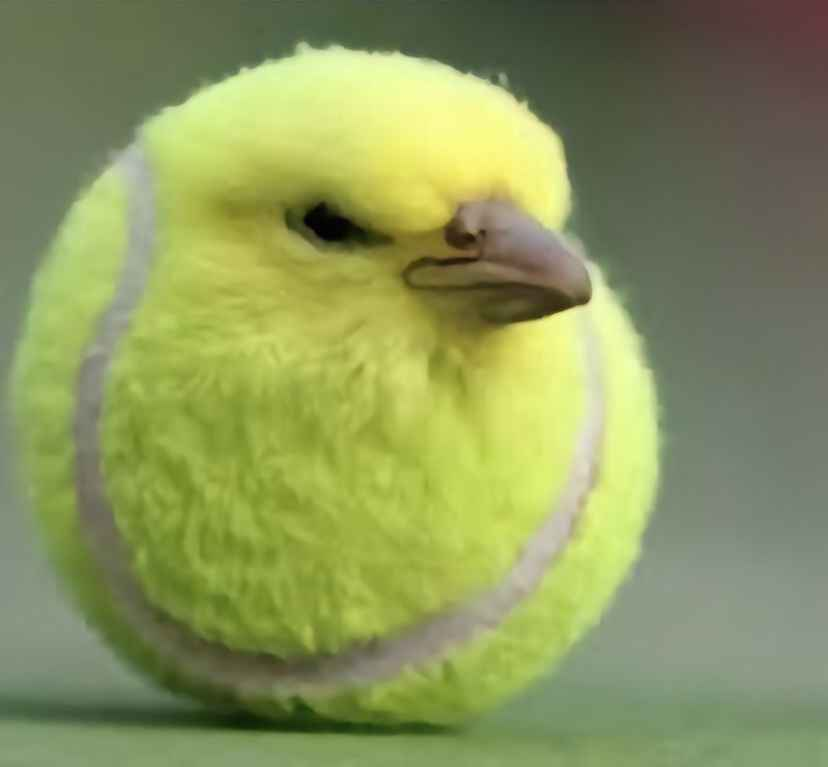

Description for Snaptik.app_74047308989874537292.jpg
The image shows a digitally altered creation: a yellow tennis ball that has been manipulated to resemble a bird. The tennis ball's texture mimics the appearance of feathers, and a bird's beak and eye have been cleverly integrated into the ball to complete the illusion. The combination of the inanimate tennis ball and the features of a bird creates a surreal and somewhat humorous effect.
